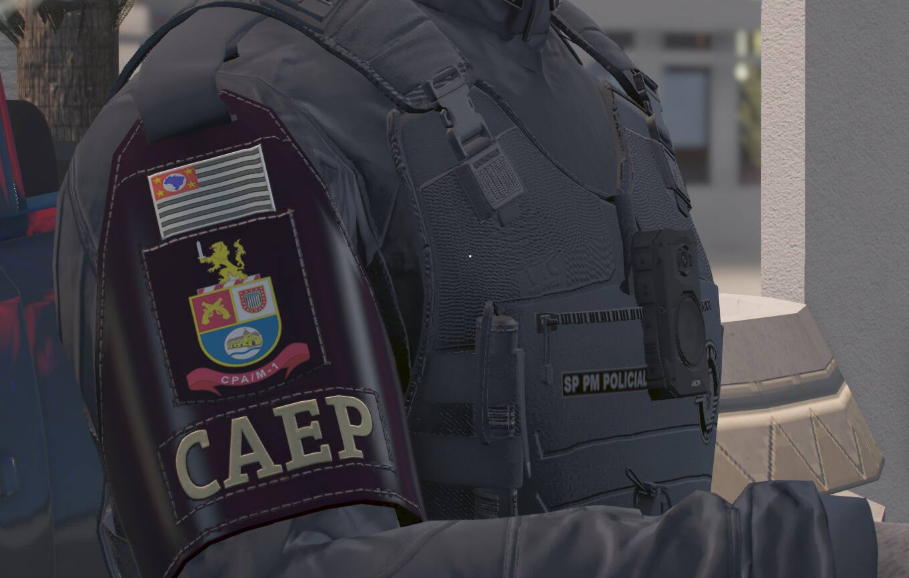
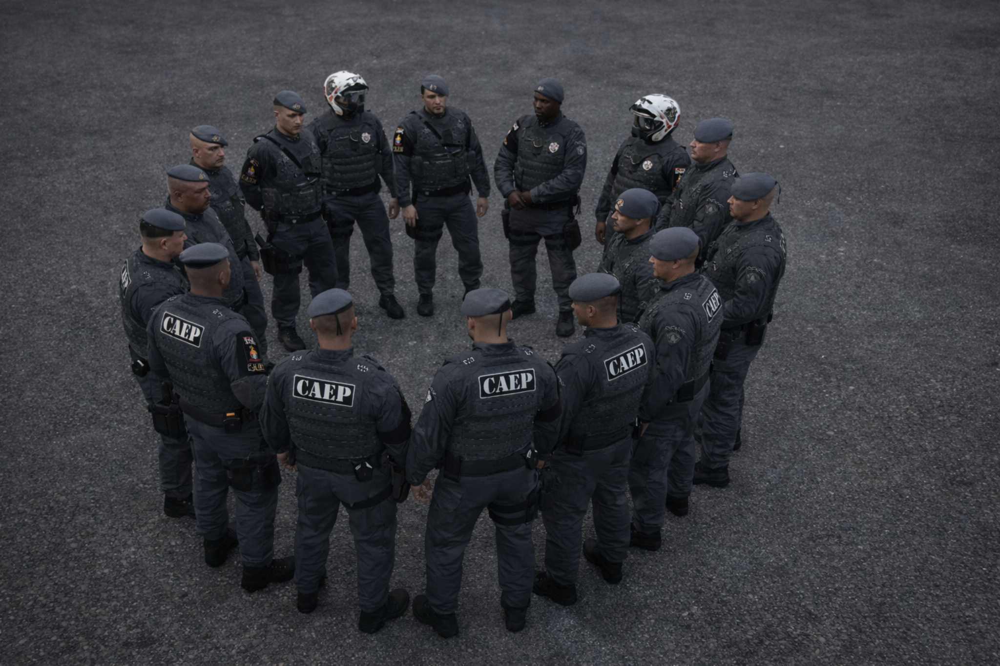
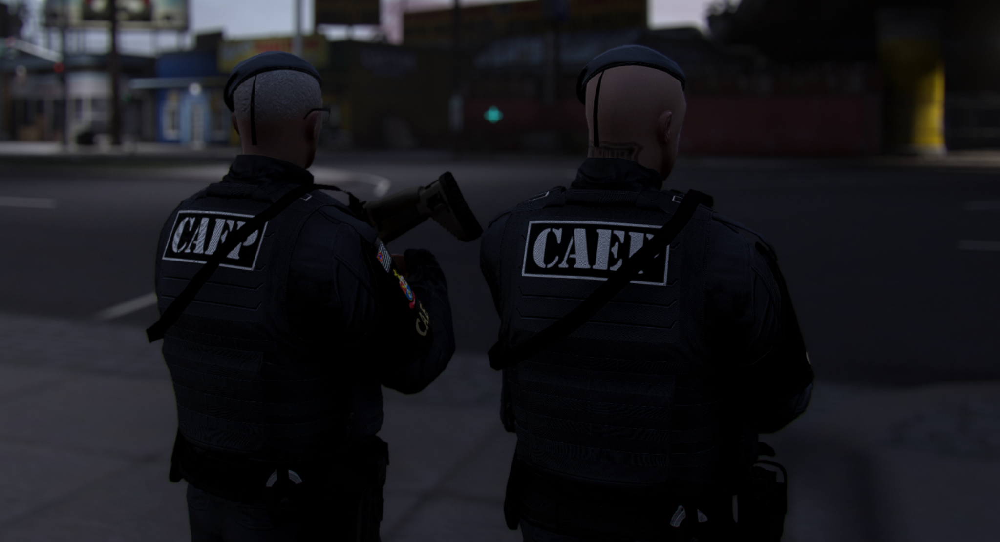
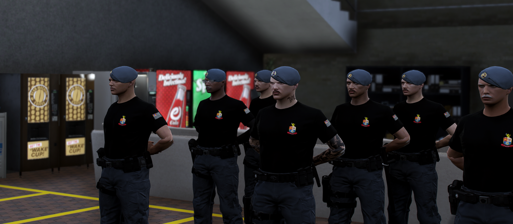
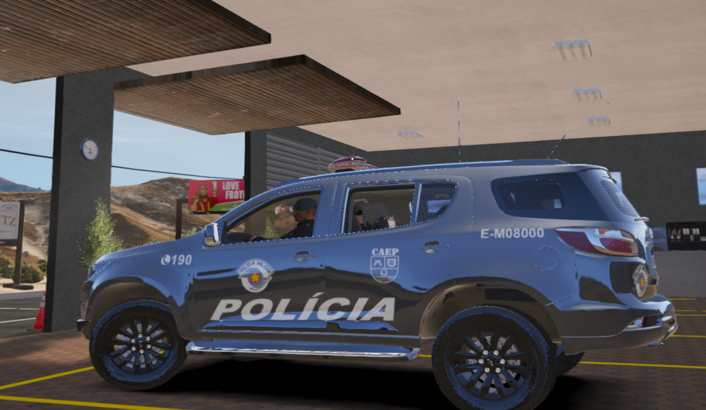

Galeria Operacional






DISCIPLINA • ESTRATÉGIA • PRONTA RESPOSTA
A Companhia de Ações Especiais de Polícia (CAEP) foi estruturada a partir da necessidade de ampliar a capacidade de resposta operacional em ocorrências de maior complexidade, com ênfase no emprego tático, disciplina de tropa e pronta-resposta. A evolução do cenário criminal, marcada por maior organização logística de grupos criminosos, emprego de armamento de maior potencial ofensivo e aumento de ocorrências críticas em áreas urbanas, demandou a implementação de equipes com preparo técnico diferenciado e doutrina operacional específica.
A CAEP foi concebida para atuar como força de apoio especializado ao policiamento ostensivo convencional, mantendo integração direta com a cadeia de comando e com as demais frações operacionais. Sua estrutura e emprego seguem princípios compatíveis com o modelo de atuação de unidades especializadas da Polícia Militar do Estado de São Paulo, com foco em mobilidade, padronização de procedimentos, eficiência na tomada de decisão e capacidade de atuação em cenários de risco elevado.
A unidade foi organizada com base em princípios de hierarquia, disciplina e profissionalismo, adotando procedimentos operacionais padronizados e métodos de planejamento compatíveis com operações táticas urbanas. O emprego da CAEP prioriza ações com superioridade técnica, preservação da vida e controle de risco, observando a legalidade e a proporcionalidade no uso da força.
A estrutura de funcionamento contempla comando responsável pelo direcionamento estratégico e coordenação do emprego operacional, além de setores internos voltados à gestão do efetivo, planejamento de missões, levantamento de informações operacionais e suporte logístico. Essa organização permite que a companhia mantenha capacidade de mobilização rápida, sustentação de operações e continuidade do serviço com padrão elevado.
O ingresso na CAEP exige avaliação interna e critérios de aptidão compatíveis com o nível de exigência da atividade. O processo busca selecionar policiais com perfil operacional adequado, considerando condicionamento físico, controle emocional, disciplina, histórico funcional e capacidade de atuação em equipe. Após a seleção, o efetivo passa por ciclos de capacitação e treinamento continuado, garantindo atualização constante e manutenção do padrão técnico.
Os treinamentos envolvem técnicas de abordagem policial, progressão tática em ambiente urbano, tiro operacional, condução e posicionamento de viaturas, procedimentos de alto risco e gerenciamento de ocorrências críticas. A capacitação contínua reforça a padronização e a interoperabilidade com outras frações, elevando a eficiência e a segurança durante as missões.
Ao longo de sua evolução, a CAEP consolidou-se como fração estratégica no suporte ao policiamento ostensivo, destacando-se pela disciplina de tropa, padronização, presença qualificada e capacidade de atuação em ocorrências críticas. A companhia representa o compromisso permanente com a manutenção da ordem pública, proteção da sociedade e fortalecimento do policiamento ostensivo por meio de atuação técnica, organizada e orientada por resultados.
A Companhia de Ações Especiais de Polícia (CAEP) tem como objetivo principal atuar de forma estratégica no apoio às unidades operacionais, oferecendo capacidade tática diferenciada para o enfrentamento de ocorrências de média e alta complexidade. A unidade busca ampliar a eficiência do policiamento ostensivo por meio de equipes preparadas para atuar em cenários que exigem maior organização operacional, disciplina tática e rapidez de resposta.
Entre os principais objetivos institucionais da CAEP está o fortalecimento da presença policial em áreas com maior incidência criminal, contribuindo diretamente para a preservação da ordem pública, redução de índices criminais e aumento da sensação de segurança da população.
A CAEP tem como objetivo prestar apoio às unidades territoriais sempre que a complexidade da ocorrência exigir reforço tático ou maior capacidade de mobilização. Essa atuação permite que equipes especializadas auxiliem no controle de situações críticas, garantindo maior segurança tanto para os policiais quanto para a sociedade.
Outro objetivo fundamental da companhia é atuar de forma preventiva e repressiva no combate à criminalidade. Por meio de patrulhamento tático, operações de saturação e presença estratégica em áreas de risco, a unidade contribui para inibir ações criminosas e reduzir a atuação de grupos envolvidos em atividades ilícitas.
A CAEP também tem como objetivo atuar em ocorrências que exigem maior preparo técnico e organização operacional, como abordagens de alto risco, apoio em operações policiais planejadas, cumprimento de mandados judiciais e ações integradas com outras unidades especializadas.
A companhia busca manter integração constante com outras unidades operacionais da corporação, atuando de forma coordenada em operações conjuntas. Essa integração fortalece a capacidade de resposta policial e garante maior eficiência no emprego do efetivo em diferentes cenários operacionais.
A manutenção de elevado nível de preparo técnico também faz parte dos objetivos da CAEP. A unidade incentiva a capacitação contínua de seus integrantes por meio de treinamentos, instruções e aperfeiçoamento constante de técnicas operacionais, garantindo que as equipes estejam sempre preparadas para atuar em situações críticas.
Dessa forma, a Companhia de Ações Especiais de Polícia busca consolidar-se como uma fração operacional estratégica dentro da estrutura policial, contribuindo diretamente para o fortalecimento da segurança pública e para a eficiência das ações de policiamento ostensivo.
A Companhia de Ações Especiais de Polícia (CAEP) realiza operações voltadas ao enfrentamento da criminalidade e ao apoio direto às unidades de policiamento ostensivo. Por possuir equipes com preparo técnico diferenciado e doutrina operacional voltada para situações críticas, a companhia é empregada principalmente em cenários que exigem maior organização tática, mobilização de efetivo e rapidez de resposta.
As operações desenvolvidas pela CAEP são planejadas com base em análise operacional, levantamento de informações e avaliação do cenário de risco, garantindo que o emprego da unidade ocorra de forma estratégica e eficiente.
As operações de saturação consistem no emprego intensivo de equipes policiais em determinadas regiões com maior incidência de criminalidade. O objetivo é ampliar a presença policial, realizar abordagens preventivas, fiscalizar veículos e indivíduos suspeitos e aumentar a sensação de segurança da população.
Essas operações são realizadas em pontos estratégicos da cidade com o objetivo de fiscalizar veículos, verificar documentação, identificar indivíduos procurados pela justiça e localizar armas ou outros materiais ilícitos. A atuação em bloqueios operacionais contribui para a prevenção de crimes e para o controle de circulação em áreas críticas.
O patrulhamento tático é realizado por equipes treinadas para atuar em áreas com maior risco operacional. Essas equipes realizam rondas estratégicas, monitoramento de locais sensíveis e abordagens policiais com técnicas operacionais específicas, garantindo maior controle e presença policial qualificada.
Em situações de fuga de suspeitos ou localização de indivíduos envolvidos em crimes, a CAEP pode atuar em operações de cerco e contenção. Nessas ações, as equipes organizam bloqueios táticos, controle de rotas de fuga e buscas em áreas determinadas para localizar e deter os envolvidos.
A companhia também participa de operações integradas com outras unidades operacionais da corporação, como Força Tática, ROCAM e outras frações especializadas. A atuação conjunta permite ampliar o efetivo empregado e fortalecer a capacidade de resposta policial em operações de maior porte.
Além das ações repressivas, a CAEP também desenvolve operações preventivas voltadas à presença estratégica em locais de grande circulação de pessoas, eventos e áreas com histórico de ocorrências. Essa atuação preventiva contribui para reduzir oportunidades de crime e aumentar a segurança da população.
Por meio dessas operações, a Companhia de Ações Especiais de Polícia mantém atuação constante no apoio ao policiamento ostensivo, reforçando a presença policial e contribuindo diretamente para a preservação da ordem pública.





| Nome | Patente |
|---|---|
| Maxwell Araujo | Capitão |
| Paulo Guerra | 1º Tenente |
| Jhon Connor | 2º Tenente |
| Vinicius Pontel | 2º Tenente |
| Juliano Soares | 2º Tenente |
| Filipe Hoffmann | Aspirante a Oficial |
| Jotav Cavalcanti | 1º Sargento |
| João Leal | 1º Sargento |
| Dante Barbosa | 1º Sargento |
| Pedro Saldanha | 1º Sargento |
| Davi Silva | 2º Sargento |
| André Mathias | 2º Sargento |
| Paulo Estevam | 2º Sargento |
| Gabriel Junior | 2º Sargento |
| Gustavo Rodrigues | 2º Sargento |
| Gabriel Sant | 2º Sargento |
| Arthur Gama | 3º Sargento |
| Silveira Junior | 3º Sargento |
| João Guerra | 3º Sargento |
| Eddy Falcon | 3º Sargento |
| Rony Vieira | 3º Sargento |
| Everton Nascimento | 3º Sargento |
| Luiz Ricardo | Cabo |
| Vitor Aguiar | Cabo |
| Fernanda Prado | Cabo |
| Guilherme Silva | Cabo |
| Giovanni Dutra | Cabo |
| David Prestes | Cabo |
| João Almeida | Cabo |
| Matheus Santana | Cabo |
| Jotta Manel | Cabo |
| Bryan Falcon | Cabo |
| Johnny Guerra | Cabo |
| Bastião Carreiro | Cabo |